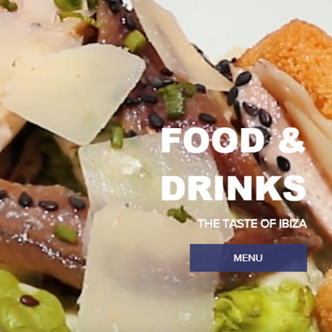
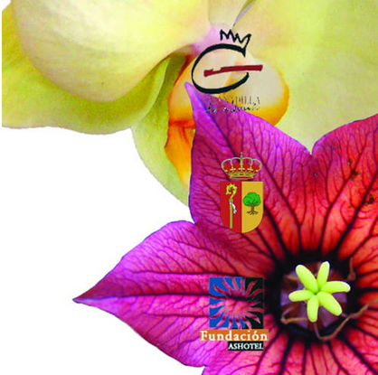
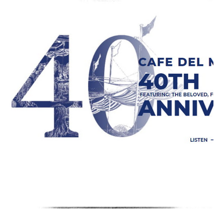
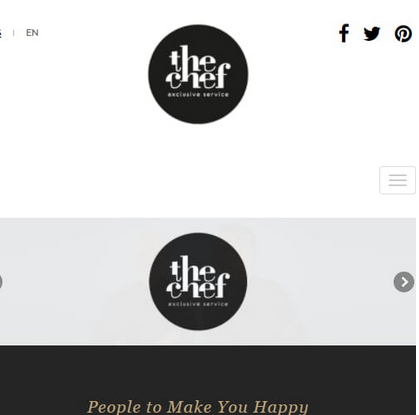

Beatriz Romero
[Diseñadora Gráfica]
Por Beatriz Romero, 26 de octubre de 2020
Licenciada en Bellas Artes, especialidad Diseño Gráfico. Graduada en Diseño. Master
diseño de aplicaciones Multimedia, actualmente cursando master Diseño Aplicaciones
Web. Técnico especialista en Informática de gestión. Madre de dos hijas. Actualmente
trabajo para el Departamento de educacion Navarra, A veces Diseño , y otras sueño que
diseño lo reconozco... Design is my passion .
Portada abril TNF se mueve

Página Chef Silvia Ibiza

Ilustración Cabildo de TNF

Imagen del restaurante Conjeturas
 Cartel presentación ONLINE
Cartel presentación ONLINE

Proyecto bar Bistro